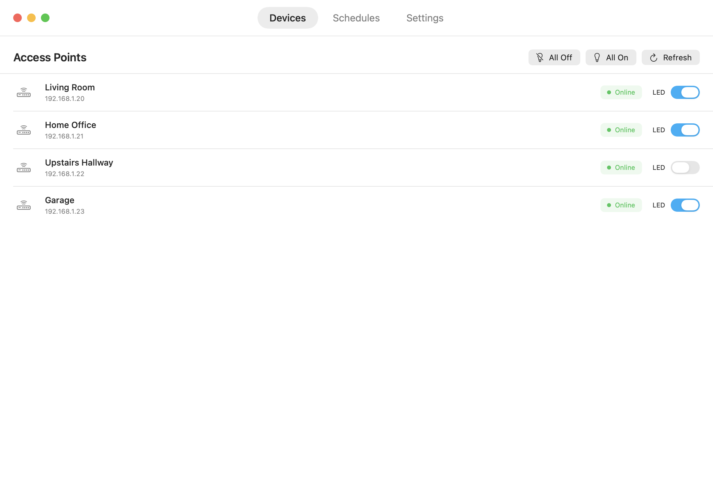

Bright when you want.
Dark when you don't.
UniGlo puts the LEDs on your UniFi access points on a schedule — a tiny native macOS app, no scripts or SSH required.

The whole app, at a glance
Three tabs and an editor. That's the entire interface — and it matches your Mac in light or dark.
Flip any AP's LED instantly, or hit All Off on the way to bed.
Your LEDs run themselves
Status lights are useful at noon and annoying at midnight — especially when an AP lives in a bedroom or hallway. UniGlo keeps them on while you're around and off while you sleep.
Per-day scheduling
Different on/off times for every day of the week, with DST handled for you.
Every AP, one place
Toggle LEDs per device or all at once, with live online status for each access point.
Manual overrides
Movie night? Flip the lights off now — your schedule picks back up on its own.
Keychain-secured
Controller credentials are stored in the macOS Keychain — never in plain text.
Local & private
Talks directly to your UniFi controller on your network. No cloud, no account, no telemetry.
Stays current
Built-in Sparkle updates deliver new versions the moment they ship.
Up and running in minutes
One small download, one local account, one schedule. Done.
Connect your controller
Create a minimal local UniFi user and paste its details into Settings — the setup guide walks you through it.
Build a schedule
Pick your access points, days, and times. UniGlo handles the rest, every day.
Give your LEDs a bedtime
Free, open source, and ready in minutes.